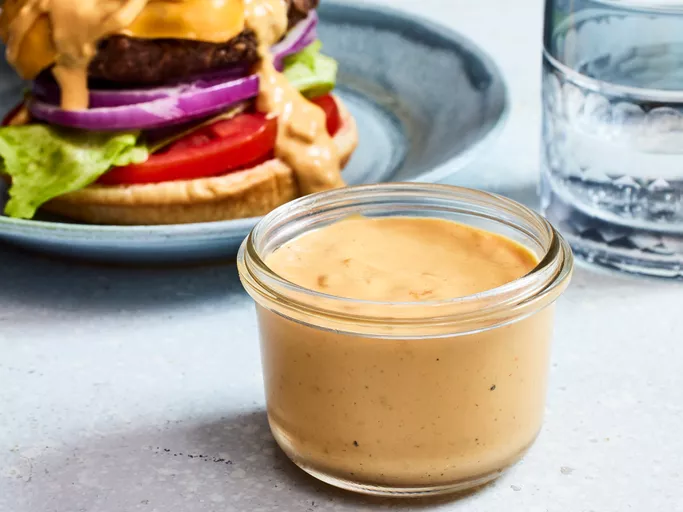

Burger Sauce Recipe

Description
This burger sauce has a zippy flavor that goes well in sandwiches or as a fry dip. It's a tangy sauce that can be made spicy or milder for kids.
This tangy burger sauce will take homemade hamburgers up a notch. It’s also great with chips and fries!
Ingredients
- Condiments: A flavorful mixture of ketchup, mayonnaise, and mustard is the base.
- Seasonings: This burger sauce recipe is seasoned with dried minced onion, dried minced garlic, and seasoned pepper.
- Hot sauce: Hot sauce (to taste) spices things up.
- Vinegar: A dash of vinegar adds a bit of zing and balances the other ingredients.
Steps
- Gather all ingredients.
- Whisk together mayonnaise, ketchup, mustard, onion, garlic, and vinegar in a bowl.
- Season with hot sauce and seasoned pepper.
- Cover and chill at least 1 hour before serving
- Serve and enjoy!